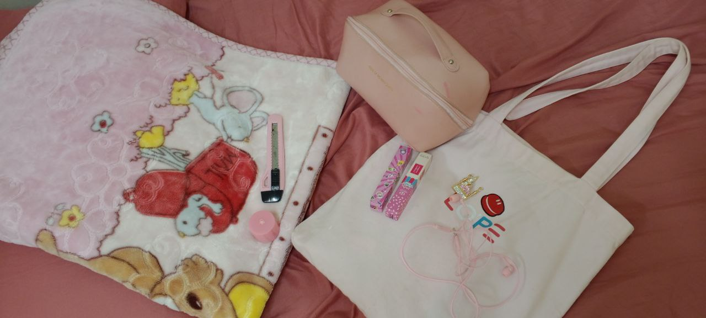
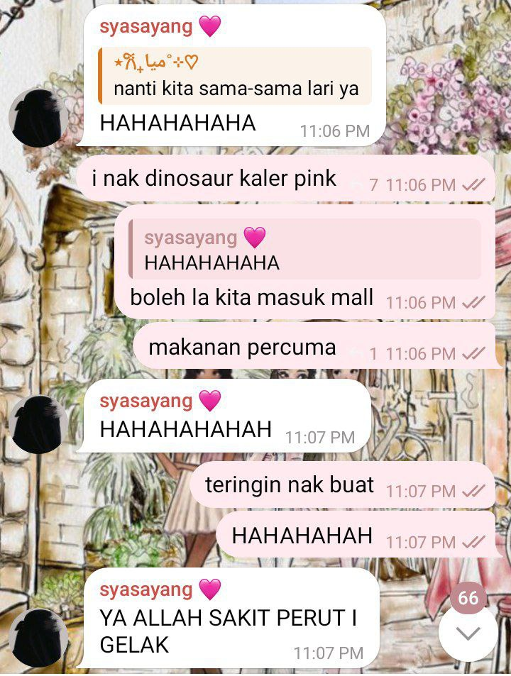
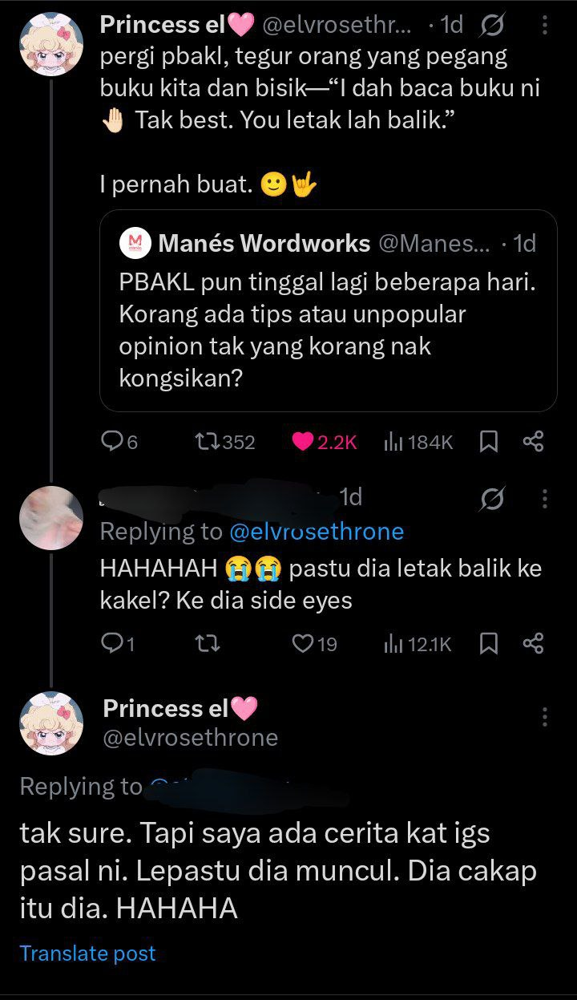
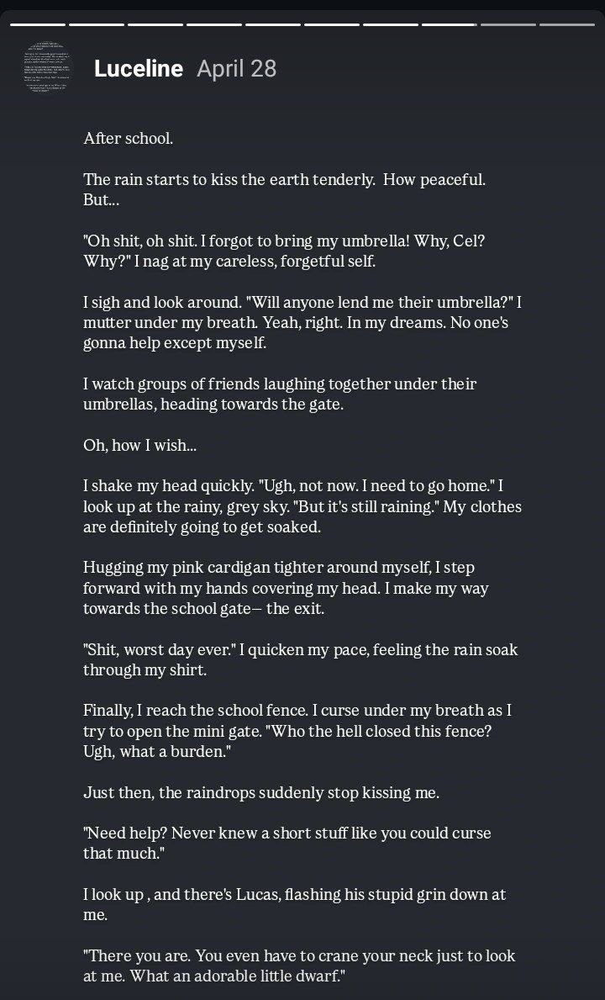
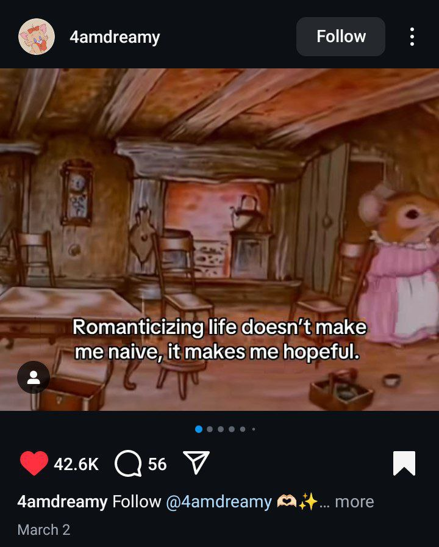
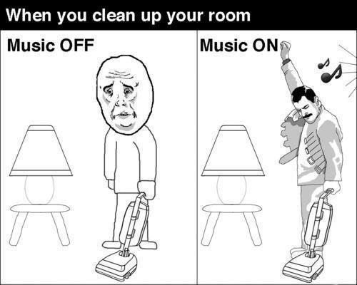
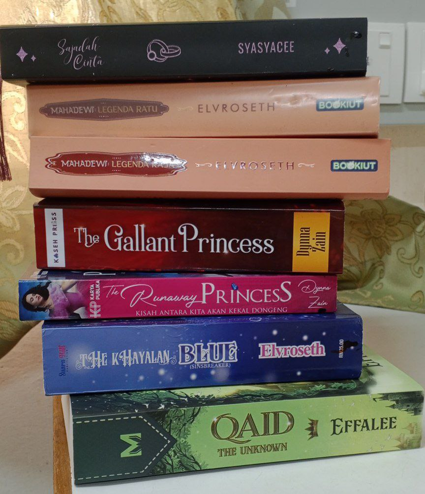

These are the quirks, rituals, and soul-tingling little traits that make me... me ˶ᵔ ᵕ ᵔ˶
Pink is my soul. If there is no pink color in this world, I would rather be blind 💖💢
I always texting my friends silly things 🤣
I love interacting with my favorite author, which is Elvroseth. Oh, and I call her kakel!
I love writing random short stories but they never found ending 💌
I liked and saved random silly post or quote on IG but never look for them back lol 😶🌫️
Vlogging to myself is my therapy (even if no one sees it) 🎥
I clean my room at 1AM and call it “resetting my universe” 🌙
Sometimes I talk to books. Yes, out loud. And yes, they talk back 😌📖
